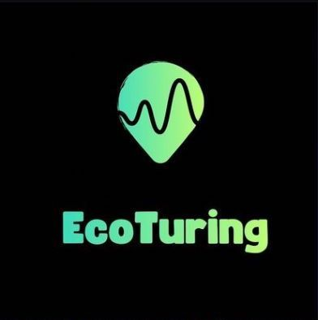

Trilhas autoguiadas com informações georreferenciadas em áudio, texto e imagem — autonomia e imersão na natureza.

O projeto EcoTuring nasceu durante uma trilha no Campus Xique-Xique, quando a professora de informática Elisa Menendez percebeu a dificuldade dos trilheiros em acompanhar as explicações do guia. A partir disso, desenvolveu-se um aplicativo para trilhas autoguiadas que permite ao usuário acessar informações georreferenciadas em áudio, texto e imagem, promovendo autonomia e imersão na natureza. A primeira versão foi criada entre 2022 e 2023 com apoio do Edital PIBIEX Júnior. Desde então, o projeto vem sendo aprimorado com novas trilhas e funcionalidades, incluindo acessibilidade em Libras. Desenvolvido com Flutter e Firebase, o app está disponível para Android na Google Play Store. O cadastro das trilhas envolve mapeamento via GPS, levantamento de dados e colaboração com a comunidade local. O EcoTuring atua na região de Xique-Xique e Valença, promovendo integração entre saberes populares, ciência e inovação.
Estamos sempre buscando expandir nosso catálogo de trilhas e promover a conservação da natureza. Dessa forma, convidamos instituições, escolas, prefeituras, projetos de extensão e demais interessados a entrarem em contato com a equipe do EcoTuring (ecoturing@gmail.com | @ecoturing) para o cadastro de trilhas interpretativas em suas regiões. Juntos, podemos ampliar o acesso à educação ambiental, fortalecer o ecoturismo e promover uma conexão mais consciente com os diversos biomas brasileiros.
Novidades do projeto, registros das trilhas e muito mais.
@ecoturing